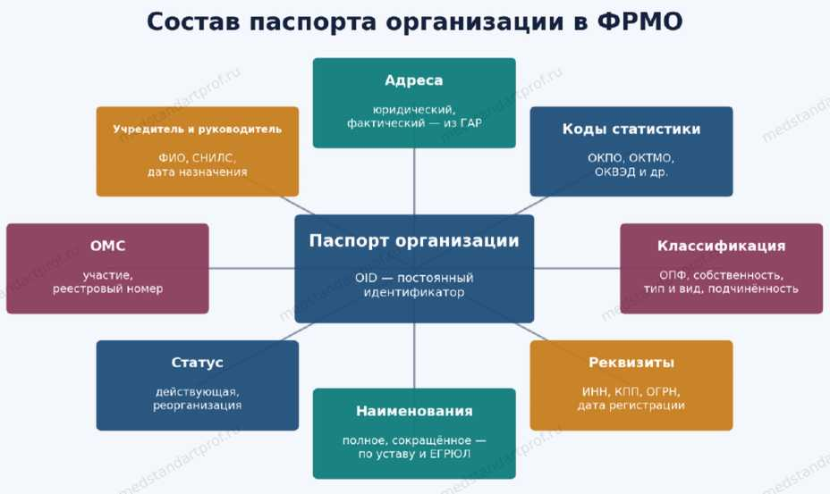
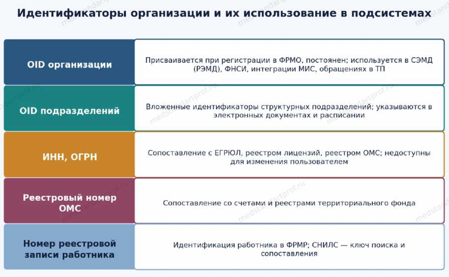
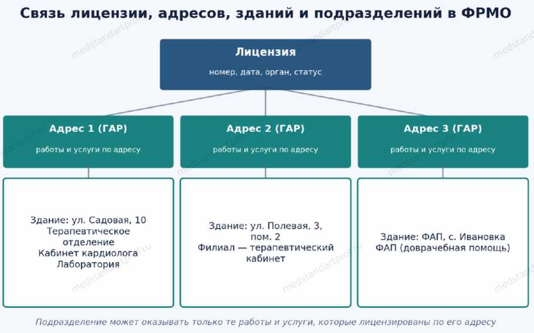
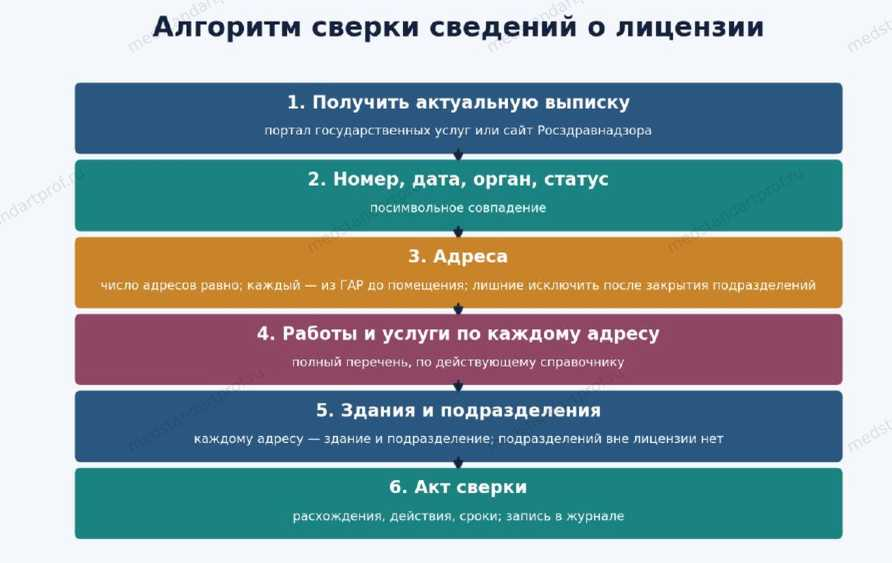
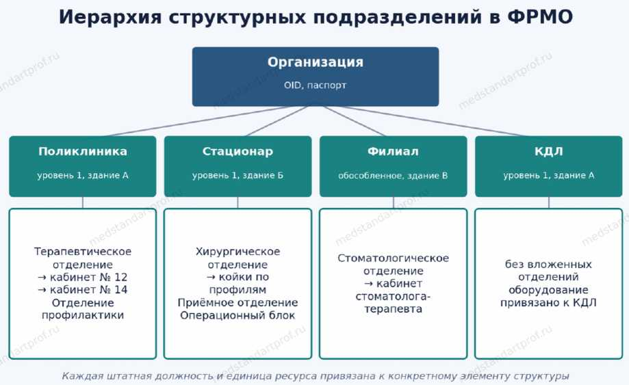
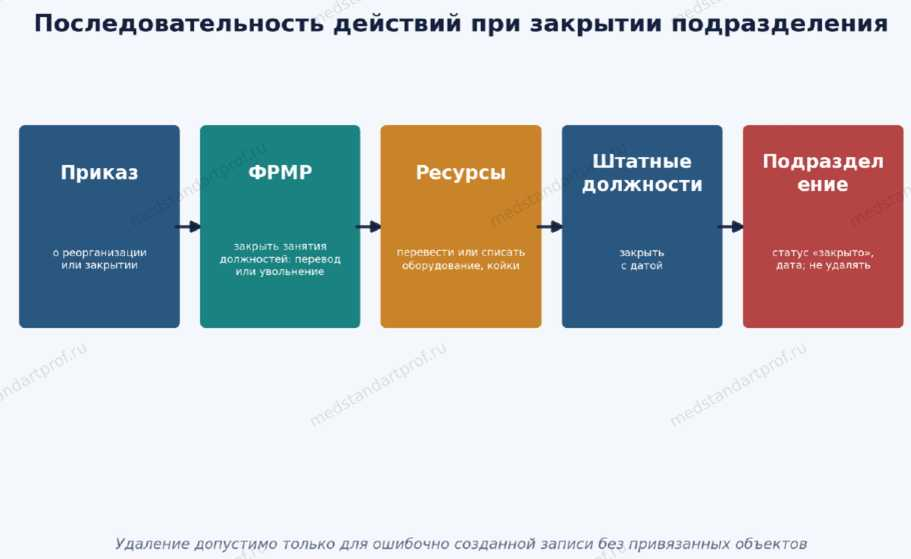

Раздел общих сведений — «паспорт» организации в ФРМО — первый и самый устойчивый раздел реестра: он меняется редко, но ошибка в нём распространяется на все остальные подсистемы. Неверное наименование попадёт в электронные медицинские документы, неверный тип организации исказит статистику, неактуальный руководитель приведёт к отклонению заявок. Лекция описывает состав паспорта, источники каждого сведения и правила их внесения.
Цель лекции — освоить состав и правила заполнения общих сведений об организации в ФРМО, понять назначение идентификаторов и порядок согласования изменений.
Раздел содержит следующие группы полей (по руководству пользователя; состав уточняется при обновлениях интерфейса):
|
Группа |
Поля |
Источник сведений |
|
Наименования |
Полное наименование, сокращённое наименование |
Устав, выписка из ЕГРЮЛ (для ИП — свидетельство, выписка из ЕГРИП) |
|
Регистрационные реквизиты |
ИНН, КПП, ОГРН (ОГРНИП), дата государственной регистрации, налоговый орган, регистрирующий орган |
Выписка из ЕГРЮЛ (ЕГРИП) |
|
Классификация |
Организационно-правовая форма, форма собственности, ведомственная принадлежность, тип и вид медицинской организации, профиль, уровень (для государственных), участие в программе обязательного медицинского страхования |
Устав, учредительные документы, справочники реестра, реестр медицинских организаций в системе ОМС |
|
Коды статистики |
ОКПО, ОКОГУ, ОКАТО/ОКТМО, ОКФС, ОКОПФ, оквэд |
Уведомление Росстата, выписка из ЕГРЮЛ |
|
Адреса |
Юридический адрес, фактический (почтовый) адрес — по государственному адресному реестру |
Выписка из ЕГРЮЛ, документы на здания |
|
Учредитель |
Наименование, ИНН учредителя (для государственных и муниципальных — орган власти) |
Устав, выписка из ЕГРЮЛ |
|
Руководитель |
Фамилия, имя, отчество, должность, СНИЛС, дата назначения, контактные данные |
Приказ (решение) о назначении, выписка из ЕГРЮЛ |
|
Контакты |
Телефон, электронная почта, сайт |
Данные организации |
|
Идентификаторы |
OID организации, идентификатор в реестре, идентификатор в системе ОМС (реестровый номер) |
Присваиваются при регистрации; реестр ФОМС |
|
Статус |
Действующая, реорганизуемая, ликвидированная; даты |
Выписка из ЕГРЮЛ |

Рисунок 1. Состав паспорта организации в ФРМО
Полное и сокращённое наименования вносятся в точном соответствии с уставом и ЕГРЮЛ, включая организационно-правовую форму, кавычки, регистр букв и знаки препинания. Наименование из ФРМО используется в справочнике «Реестр медицинских организаций» и в электронных документах, поэтому расхождение с ЕГРЮЛ — основание для замечаний при проверках. Для индивидуального предпринимателя наименование формируется как «Индивидуальный предприниматель Фамилия Имя Отчество».
ИНН и ОГРН — ключевые идентификаторы, по которым организация сопоставляется с ЕГРЮЛ, реестром лицензий и реестром ОМС. Они вносятся при регистрации и, как правило, недоступны для изменения пользователем организации: при ошибке — обращение в техническую поддержку с приложением выписки. КПП изменяется при смене адреса (налогового органа); изменение вносится организацией с указанием даты.
Организационно-правовая форма и форма собственности выбираются из справочников (ОКОПФ, ОКФС). Тип и вид медицинской организации выбираются из номенклатуры медицинских организаций (приказ Минздрава России об утверждении номенклатуры медицинских организаций, действующая редакция): например, «поликлиника», «больница», «центр (медицинский)», «стоматологическая поликлиника», «санаторий». Для организаций, наименование которых не содержит вида, вид определяется по основному виду деятельности и структуре. Неверный вид искажает распределение организаций в статистике и может влиять на доступность отдельных разделов реестра (например, коечный фонд для амбулаторной организации). Изменение типа или вида, как правило, требует согласования региональным центром или оператором.
Ведомственная принадлежность — для организаций, подведомственных федеральным органам (Минздрав, ФМБА, Минобороны и другие), региональным и муниципальным органам; для частных — «частная система здравоохранения».
Участие в ОМС и реестровый номер в системе ОМС указываются по реестру медицинских организаций, осуществляющих деятельность в сфере ОМС, который ведёт территориальный фонд.
Адреса вносятся с использованием государственного адресного реестра (ГАР, ранее — ФИ АС): пользователь выбирает элементы адреса из справочника до уровня дома, помещения. Ввод адреса «строкой» не допускается. Если адрес отсутствует в реестре (новое строение), сначала обеспечивается его внесение в ГАР по установленной процедуре через орган местного самоуправления, затем — выбор в ФРМО. Юридический адрес должен совпадать с ЕГРЮЛ; фактический адрес — адрес основного здания.
Учредитель указывается по уставу: для государственных учреждений — орган исполнительной власти субъекта или федеральный орган; для частных — юридические или физические лица (в объёме, предусмотренном интерфейсом). Сведения о руководителе — по приказу о назначении и ЕГРЮЛ; СНИЛС руководителя используется для сопоставления с его учётной записью ЕСИА при активации личного кабинета участника. Смена руководителя вносится в день получения выписки из ЕГРЮЛ с изменениями.
При регистрации в ФРМО организации присваивается объектный идентификатор (OID) в пространстве идентификаторов Минздрава России — уникальная последовательность чисел, разделённых точками. OID является постоянным идентификатором организации во всех подсистемах: он указывается в электронных медицинских документах, используется при интеграции медицинской информационной системы, в обращениях в техническую поддержку. Структурным подразделениям также присваиваются OID, вложенные в OID организации.
OID не изменяется при переименовании организации или смене руководителя. При реорганизации с образованием нового юридического лица новая организация получает новый OID, а прежняя переводится в статус ликвидированной с указанием правопреемника.
Реестровый номер в системе ОМС, код по ОКПО, идентификатор в региональной системе — вносятся в соответствующие поля и обеспечивают сопоставление сведений между системами. Уполномоченное лицо ведёт перечень идентификаторов организации в регламенте.
Рисунок 2. Идентификаторы организации и их использование в подсистемах
Изменения отдельных сведений паспорта — наименования, типа и вида, статуса, реквизитов — могут направляться на согласование региональному центру или оператору. Порядок:
1. Уполномоченное лицо вносит изменение и сохраняет запись; статус — «на согласовании».
2. Согласующая сторона проверяет изменение по документам (при необходимости запрашивает подтверждение) и утверждает либо отклоняет с указанием причины.
3. При отклонении уполномоченное лицо устраняет причину и направляет повторно.
До завершения согласования в других подсистемах действуют прежние сведения. Уполномоченное лицо фиксирует в журнале дату внесения изменения и дату согласования; срок согласования не продлевает нормативный срок размещения сведений, но подтверждает своевременность действий организации.
5. Типичные ошибки паспорта
|
Ошибка |
Последствие |
Как избежать |
|
Наименование внесено с сокращениями или без кавычек, отличается от ЕГРЮЛ |
Замечания при проверке; несоответствие в электронных документах |
Копировать из выписки ЕГРЮЛ; сверять посимвольно |
|
Выбран неверный вид |
Искажение статистики; |
Сверить с номенклатурой; |

|
организации |
недоступность разделов |
согласовать с региональным центром |
|
Юридический адрес введён вручную или без элемента «помещение» |
Несоответствие ГАР; ошибки сопоставления |
Выбирать из справочника ГАР до конечного элемента |
|
Не обновлён руководитель |
Невозможность активации кабинета новым руководителем; расхождение с ЕГРЮЛ |
Вносить в день получения выписки |
|
Не указано участие в ОМС или реестровый номер |
Ошибки сопоставления со счетами ОМС |
Сверять с реестром территориального фонда |
|
Дублирующая регистрация организации (под старым и новым наименованием) |
Два OID, разрыв истории, ошибки в других подсистемах |
Проверять реестр перед регистрацией; при переименовании актуализировать, а не регистрировать заново |
Паспорт организации проверяется по чек-листу (Чек-лист 1 курса):
• ежеквартально — сверка с выпиской из ЕГРЮЛ (наименование, адрес, руководитель, ОКВЭД);
• при каждом изменении учредительных документов, руководителя, адреса — немедленно;
• ежегодно перед статистической отчётностью — полная сверка с данными формы № 30 (тип, вид, подчинённость).
Паспорт организации в ФРМО — основа идентификации организации во всех подсистемах: наименования, реквизиты, классификация, адреса, учредитель, руководитель и идентификаторы. Сведения вносятся строго по документам (устав, ЕГРЮЛ, реестр лицензий, реестр ОМС) с использованием справочников и государственного адресного реестра; ключевые реквизиты и OID неизменны и корректируются только через оператора. Изменения классификации и статуса проходят согласование. Регулярная сверка паспорта с ЕГРЮЛ предотвращает распространение ошибок в электронные документы и статистику.
1. Постановление Правительства Российской Федерации от 09.02.2022 № 140 «О единой государственной информационной системе в сфере здравоохранения» (с последующими изменениями и дополнениями), приложение № 1.
2. Приказ Минздрава России об утверждении номенклатуры медицинских организаций (действующая редакция).
3. Федеральный закон от 08.08.2001 № 129-ФЗ «О государственной регистрации юридических лиц и индивидуальных предпринимателей» (с последующими изменениями и дополнениями).
4. Федеральный закон от 28.12.2013 № 443-ФЗ «О федеральной информационной адресной системе...» (с последующими изменениями и дополнениями).
5. Постановление Правительства Российской Федерации от 01.06.2021 № 852 «О лицензировании медицинской деятельности...» (с последующими изменениями и дополнениями).
6. Руководство пользователя ФРМО. — URL: portal.egisz.rosminzdrav.ru.
7. Чек-лист 1 курса «Паспорт медицинской организации».
Раздел «Лицензии» связывает ФРМО с реестром лицензий Росздравнадзора и задаёт рамку для структуры организации: подразделения могут располагаться только по адресам, включённым в лицензию, и оказывать только те работы и услуги, которые лицензированы. Ошибки в этом разделе — прямой предмет лицензионного контроля.
Цель лекции — освоить правила внесения сведений о лицензиях в ФРМО, порядок сверки с реестром лицензий, связь лицензии с адресами, зданиями и подразделениями, а также действия при изменении лицензии.
С 2021 года лицензирование осуществляется по реестровой модели: лицензия существует как запись в реестре лицензий, а бумажный бланк не выдаётся. Подтверждением наличия лицензии является выписка из реестра, получаемая в электронной форме. Реестр лицензий на медицинскую деятельность ведёт Росздравнадзор (для организаций, лицензируемых органами субъектов Российской Федерации, — с передачей сведений в единый реестр). Реестровая запись содержит: регистрационный номер лицензии, дату предоставления, лицензирующий орган, сведения о лицензиате (наименование, ИНН, ОГРН), адреса мест осуществления деятельности и по каждому адресу — перечень выполняемых работ и оказываемых услуг, составляющих медицинскую деятельность, а также сведения о переоформлениях, приостановлениях, прекращении.
Перечень работ и услуг определён приложением к Положению о лицензировании медицинской деятельности (постановление № 852) и структурирован по условиям оказания помощи (первичная медико-санитарная, специализированная, скорая, паллиативная помощь, медицинские экспертизы, осмотры, освидетельствования, санитарнопротивоэпидемические мероприятия и другие) и по видам работ внутри каждого условия.
2. Состав сведений о лицензии в ФРМО
|
Поле |
Содержание |
Источник |
|
Регистрационный номер лицензии |
Номер реестровой записи |
Выписка из реестра лицензий |
|
Дата предоставления |
Дата первичного предоставления лицензии |
Выписка |
|
Лицензирующий орган |
Росздравнадзор (территориальный орган) или орган исполнительной власти субъекта |
Выписка |
|
Вид деятельности |
Медицинская деятельность (фармацевтическая — для соответствующих организаций) |
Выписка |
|
Статус |
Действует, приостановлена, прекращена; даты |
Выписка |
|
Адреса мест осуществления деятельности |
Каждый адрес по ГАР |
Выписка |
|
Работы и услуги по каждому адресу |
Перечень из справочника (условия и виды работ) |
Выписка, приложение к постановлению № 852 |
|
Сведения о переоформлении |
Даты и основания |
Выписка |
В ряде реализаций интерфейса сведения о лицензиях загружаются автоматически из реестра лицензий по ИНН организации, и пользователь лишь проверяет и подтверждает их; в других — вносит вручную. В обоих случаях ответственность за соответствие сведений реестру несёт организация.
Рисунок 1. Связь лицензии, адресов, зданий и подразделений в ФРМО

Работы и услуги в лицензии привязаны к адресам. В ФРМО перечень работ и услуг вносится по каждому адресу отдельно, в точном соответствии с выпиской: если по адресу филиала лицензированы только стоматологические работы, нельзя указать по этому адресу терапию, даже если она лицензирована по основному адресу.
Адрес места осуществления деятельности выбирается из ГАР так же, как в паспорте организации, и должен посимвольно совпадать с адресом в выписке из реестра лицензий, включая номер помещения (кабинета), если он указан в лицензии. Расхождение (например, «пом. 1» в лицензии и без помещения в ФРМО) — типичная причина замечаний.
Наименования работ и услуг выбираются из справочника реестра, сформированного по приложению к постановлению № 852. Наименования в выписках, выданных до изменения перечня работ и услуг, могут отличаться от действующего справочника (например, устаревшие формулировки); в этом случае выбирается соответствующая действующая позиция, а расхождение фиксируется для последующего переоформления лицензии.
Сведения о лицензии актуализируются при каждом переоформлении (новый адрес, новые работы и услуги, изменение наименования организации), при приостановлении и прекращении — в срок, установленный Положением о единой системе для сведений об организации. Основание — выписка из реестра лицензий с изменениями. Ожидание «появления лицензии в реестре Росздравнадзора» не является основанием для отсрочки: реестровая запись формируется в день принятия решения лицензирующим органом.
Каждый адрес места осуществления деятельности должен соответствовать зданию (помещению), внесённому в раздел «Здания». Обратное не обязательно: здание может присутствовать в реестре без лицензируемой деятельности (административный корпус, склад), но тогда в нём не должно быть подразделений, оказывающих медицинскую помощь.
Структурное подразделение, оказывающее медицинскую помощь, привязывается к зданию (адресу), включённому в лицензию, и должно оказывать помощь в условиях и по профилям, соответствующим лицензированным работам и услугам по этому адресу. Например, «кабинет врача-кардиолога» может быть создан по адресу, где лицензирована первичная специализированная медико-санитарная помощь по кардиологии. Подразделение по нелицензированному адресу или по нелицензированному профилю — нарушение, выявляемое автоматической сверкой.
Работник, занимающий должность в подразделении, должен иметь квалификацию по специальности, соответствующей лицензированным работам по адресу подразделения (квалификационные требования, приказ № 436н с 01.09.2026). Сверка «лицензия — подразделение — должность — специальность работника» выполняется Росздравнадзором при лицензионном контроле.
5. Действия при изменениях лицензии
|
Событие |
Действия в ФРМО |
Срок |
|
Получение первичной лицензии |
Внести лицензию, адреса, работы и услуги; создать здания и подразделения |
Немедленно после получения выписки, в пределах срока по Положению |
|
Переоформление — новый адрес |
Добавить адрес к лицензии с перечнем работ и услуг; внести здание; создать подразделения |
Тот же срок |
|
Переоформление — новые работы и услуги |
Добавить работы и услуги по адресу; при необходимости создать подразделения |
Тот же срок |
|
Переоформление — исключение адреса |
Закрыть подразделения по адресу (предварительно закрыв занятия должностей в ФРМР), исключить адрес из лицензии, при необходимости закрыть здание |
Тот же срок |
|
Переоформление — изменение наименования организации |
Актуализировать паспорт; сведения о лицензии обновить по новой выписке |
Тот же срок |
|
Приостановление лицензии |
Внести статус и дату; деятельность по приостановленным работам не отражается как оказываемая |
В день получения решения |
|
Прекращение лицензии |
Внести статус; при прекращении деятельности — перевод организации в соответствующий статус после закрытия подразделений и трудоустройств |
В день получения решения |
Последовательность при исключении адреса важна: удаление подразделения с «живыми» занятиями должностей блокируется форматнологическим контролем.
Сверка проводится ежеквартально и при каждом изменении по чек-листу (Чек-лист 1 курса):
1. Получить актуальную выписку из реестра лицензий (через портал государственных услуг или сайт Росздравнадзора).
2. Сопоставить номер, дату, орган, статус.
3. Сопоставить перечень адресов: отсутствующие в ФРМО — добавить; отсутствующие в лицензии — исключить (после закрытия подразделений).
4. По каждому адресу сопоставить перечень работ и услуг.
5. Проверить, что каждому лицензируемому адресу соответствует здание и хотя бы одно подразделение, и что нет подразделений по адресам вне лицензии.
6. Зафиксировать результат в акте сверки.
Рисунок 2. Алгоритм сверки сведений о лицензии
• Внесена лицензия, но не внесены адреса и работы — раздел формально заполнен, но сверка не проходит.
• Работы и услуги внесены по «основному» адресу, а по филиалам — не внесены.
• Адрес в ФРМО без номера помещения при наличии его в лицензии.
• Не внесены переоформления; в ФРМО числится первичная редакция лицензии.
• Подразделения созданы по адресу, добавленному в лицензию, раньше, чем сама лицензия актуализирована в ФРМО (нарушение последовательности).
• В ФРМО внесена лицензия на фармацевтическую деятельность аптечного пункта организации без соответствующего подразделения.
Раздел «Лицензии» ФРМО ведётся строго по выписке из реестра лицензий: номер, дата, орган, статус, адреса из государственного адресного реестра и перечень работ и услуг по каждому адресу из справочника, основанного на приложении к постановлению № 852. Лицензия задаёт рамку для зданий, подразделений и квалификации работников, поэтому изменения лицензии вносятся в установленной последовательности и в срок, а ежеквартальная сверка с реестром лицензий предотвращает замечания лицензионного контроля.

1. Федеральный закон от 04.05.2011 № 99-ФЗ «О лицензировании отдельных видов деятельности» (с последующими изменениями и дополнениями), статьи 18, 21.
2. Постановление Правительства Российской Федерации от 01.06.2021 № 852 «О лицензировании медицинской деятельности...» (с последующими изменениями и дополнениями), приложение (перечень работ и услуг).
3. Постановление Правительства Российской Федерации от 29.12.2020 № 2343 «Об утверждении Правил формирования и ведения реестра лицензий и типовой формы выписки из реестра лицензий» (с последующими изменениями и дополнениями).
4. Постановление Правительства Российской Федерации от 09.02.2022 № 140 «О единой государственной информационной системе в сфере здравоохранения» (с последующими изменениями и дополнениями).
5. Приказ Минздрава России от 14.05.2026 № 436н «Об утверждении квалификационных требований к медицинским и фармацевтическим работникам» (применяется с 01.09.2026).
6. Руководство пользователя ФРМО. — URL: portal.egisz.rosminzdrav.ru.
7. Единый реестр лицензий Росздравнадзора. — URL: roszdravnadzor.gov.ru.
Структура организации в ФРМО — это модель, по которой единая система «понимает», где и в каких условиях оказывается помощь, где размещены ресурсы и где работают люди. Здания, подразделения, отделения и кабинеты образуют иерархию, на которую ссылаются штатное расписание, оборудование, койки, расписание приёма и электронные документы. Ошибки структуры труднее всего исправлять постфактум, поскольку к каждому элементу привязаны другие записи.
Цель лекции — освоить правила описания зданий и иерархии подразделений в ФРМО, привязки подразделений к адресам, лицензиям и условиям оказания помощи, а также порядок изменений структуры.
1. Здания
1.1. Состав сведений
|
Поле |
Содержание |
Источник |
|
Наименование (тип) здания |
Главный корпус, поликлиника, филиал, ФАП, отдельно стоящее здание, помещение в здании |
Документы на здание, приказ о структуре |
|
Адрес |
По государственному адресному реестру, до помещения |
Выписка из ЕГРН, договор аренды |
|
Право владения |
Оперативное управление, собственность, аренда, безвозмездное пользование; реквизиты документа |
Выписка из ЕГРН, договор |
|
Характеристики |
Год постройки, этажность, общая площадь, площадь медицинского назначения, состояние (удовлетворительное, требует ремонта, аварийное), наличие лифта, доступность для маломобильных групп |
Технический паспорт, акты обследования |
|
Назначение |
Медицинское, административное, хозяйственное, жилое (общежитие) |
Приказ о структуре |
|
Статус |
Действующее, выведено из эксплуатации; даты |
Приказы, акты |
Состав характеристик расширялся при обновлениях реестра (площадь, право собственности, этажность стали обязательными); при изменении требований уполномоченное лицо дополняет ранее внесённые записи.
• Каждый адрес места осуществления деятельности из лицензии соответствует хотя бы одному зданию.
• Здание вносится один раз; несколько помещений в одном здании по одному адресу могут описываться как одно здание либо как отдельные помещения — в соответствии с руководством пользователя и структурой лицензии (если лицензия выдана на конкретные помещения — описываются помещения).
• Арендуемые помещения вносятся с реквизитами договора аренды и сроком; при окончании аренды и переезде здание закрывается после перевода подразделений.
• Мобильные медицинские комплексы (передвижные) описываются в разделе транспорта, а не зданий, но подразделение, работающее на их базе, привязывается к базовому зданию.
2. Структурные подразделения
2.1. Иерархия
Реестр поддерживает многоуровневую иерархию: организация структурное подразделение (уровень 1) —> отделение (уровень 2) кабинет (уровень 3). Типовые примеры:
• Поликлиника (структурное подразделение) —> терапевтическое отделение (отделение) —► кабинет врача-терапевта участкового № 12 (кабинет);
• Стационар —► хирургическое отделение —► палаты (описываются через коечный фонд, не как кабинеты);
• Филиал (обособленное подразделение по другому адресу) отделение стоматологии кабинет стоматолога-терапевта;
• Клинико-диагностическая лаборатория (структурное подразделение без вложенных отделений);
• Фельдшерско-акушерский пункт (структурное подразделение по отдельному адресу).
Глубина иерархии определяется размером организации; для малой организации допустима двухуровневая структура (подразделение кабинет). Единственное жёсткое требование — каждая штатная должность и каждая единица ресурса должны быть привязаны к конкретному элементу структуры.
Рисунок 1. Иерархия структурных подразделений в ФРМО
2.2. Состав сведений о подразделении

|
Поле |
Содержание |
|
Наименование |
По приказу об утверждении структуры и штатному расписанию |
|
Тип подразделения |
Из справочника (поликлиника, отделение, кабинет, лаборатория, ФАП, дневной стационар и другие) |
|
Вид (профиль) |
Профиль медицинской помощи из справочника (терапия, педиатрия, стоматология и другие) |
|
Условия оказания помощи |
Вне медицинской организации, амбулаторно, в дневном стационаре, стационарно |
|
Формы оказания помощи |
Экстренная, неотложная, плановая |
|
Вид помощи |
Первичная медико-санитарная, специализированная, скорая, паллиативная |
|
Услуги (при наличии поля) |
Перечень услуг, оказываемых подразделением, из номенклатуры медицинских услуг |
|
Здание, адрес |
Привязка к зданию из раздела «Здания» |
|
Родительское подразделение |
Для отделений и кабинетов |
|
Режим работы |
Дни и часы работы |
|
Руководитель подразделения |
Фамилия, имя, отчество, должность (может заполняться из ФРМР) |
|
Даты |
Создания, реорганизации, закрытия |
|
Признаки |
Обособленное подразделение (филиал), участие в ОМС, платные услуги и другие |
1. Соответствие приказу. Наименования и состав подразделений соответствуют приказу об утверждении структуры и штатному расписанию организации. Если в организации нет утверждённой структуры, её следует утвердить до заполнения реестра.
2. Соответствие лицензии. Подразделение оказывает помощь в условиях и по профилям, лицензированным по адресу его здания.
3. Соответствие номенклатуре. Тип и профиль выбираются из справочников; произвольные наименования типа «отделение красоты» не допускаются — используется ближайший тип по справочнику с сохранением наименования по приказу в поле наименования.
4. Один элемент — одна запись. Не создаются дубликаты подразделений при переименовании: переименование вносится в существующую запись с датой.
5. История. Закрытое подразделение не удаляется, а переводится в статус «закрыто» с датой; удаление допустимо только для ошибочно созданных записей без привязанных объектов.
Поля условий, форм и видов помощи используются другими подсистемами (федеральная электронная регистратура, реестр электронных документов, статистика) для классификации случаев помощи. Их заполнение должно быть логически согласовано:
|
Тип подразделения |
Условия |
Вид помощи |
Типичные формы |
|
Кабинет врача поликлиники |
Амбулаторно |
Первичная медико-санитарная (доврачебная, врачебная, специализированная) |
Плановая, неотложная |
|
Отделение стационара |
Стационарно |
Специализированная (в том числе высокотехнологичная) |
Плановая, экстренная |
|
Дневной стационар |
В дневном стационаре |
Первичная или специализированная |
Плановая |
|
Отделение скорой помощи, подстанция |
Вне медицинской организации |
Скорая, в том числе специализированная |
Экстренная, неотложная |
|
Отделение паллиативной помощи |
Стационарно/ амбулаторно / на дому |
Паллиативная |
Плановая |
|
ФАП |
Амбулаторно, вне медицинской организации |
Первичная доврачебная |
Плановая, неотложная |
Несогласованность (например, «стационарно» для кабинета поликлиники) выявляется форматно-логическим контролем и региональными сверками.
Филиалы и иные обособленные подразделения по другим адресам описываются как структурные подразделения организации с признаком обособленности и собственным зданием, а не как отдельные организации. Работники филиала занимают штатные должности в подразделениях филиала; уполномоченные лица филиала получают полномочия в контуре головной организации. Исключение — филиалы, являющиеся самостоятельными юридическими лицами (например, дочерние общества), которые регистрируются как отдельные организации.
Для организаций, оказывающих первичную медико-санитарную помощь по территориально-участковому принципу, реестр содержит сведения об участках: тип (терапевтический, педиатрический, врача общей практики, фельдшерский, акушерский, комплексный), номер, привязка к подразделению, численность прикреплённого населения (по данным территориального фонда или региональной системы), адресный перечень обслуживаемых домов (при наличии функции). Участки создаются на основании приказа об организации участков и актуализируются при изменении их числа и границ. Подробнее об участках и прикреплённом населении — в лекции 6.3.
6. Изменения структуры
|
Событие |
Действия |
Порядок |
|
Создание подразделения |
Создать запись с датой, привязать к зданию, заполнить условия и профиль |
После издания приказа; до внесения штатных должностей и работников |
|
Переименование |
Изменить наименование в существующей записи, указать дату |
Не создавать новую запись |
|
Перенос в другое здание |
Изменить привязку к зданию с датой; проверить лицензию по новому адресу |
После актуализации лицензии, если адрес новый |
|
Слияние подразделений |
Перевести штатные должности и ресурсы в подразделение-приёмник, закрыть подразделение-источник |
Сначала ФРМР (перевод работников), затем ФРМО |
|
Закрытие |
Закрыть занятия должностей (ФРМР), перевести или списать ресурсы, закрыть штатные должности, закрыть подразделение с датой |
Строго в этой последовательности |
|
Ошибочно созданная запись |
Удалить, если нет привязанных объектов; иначе — закрыть с примечанием |
По руководству пользователя |

Рисунок 2. Последовательность действий при закрытии подразделения
• Структура в ФРМО отражает «удобное» деление, а не приказ об утверждении структуры; при проверке приказ и реестр не совпадают.
• Все врачи «сложены» в одно подразделение «Поликлиника» без отделений и кабинетов, что делает невозможной публикацию расписания по кабинетам и корректную статистику.
• Подразделения по адресу филиала привязаны к зданию головной организации.
• Дубликаты подразделений после переименований; старые записи не закрыты.
• Условия оказания помощи не заполнены или заполнены единообразно для всех подразделений.
• Закрытие подразделения с активными занятиями должностей — блокируется контролем, ответственный «оставляет как есть».
Структура организации в ФРМО — иерархия зданий, подразделений, отделений и кабинетов, построенная по приказу об утверждении структуры, привязанная к лицензируемым адресам и описанная через справочные типы, профили, условия, формы и виды помощи. На элементы структуры ссылаются штатное расписание, ресурсы, работники и другие подсистемы, поэтому изменения вносятся в существующие записи с датами, закрытие выполняется в строгой последовательности (работники —► ресурсы должности —> подразделение), а дубликаты недопустимы.
1. Постановление Правительства Российской Федерации от 09.02.2022 № 140 «О единой государственной информационной системе в сфере здравоохранения» (с последующими изменениями и дополнениями).
2. Федеральный закон от 21.11.2011 № 323-ФЗ «Об основах охраны здоровья граждан в Российской Федерации», статьи 32-36 (виды, условия и формы медицинской помощи).
3. Приказ Минздрава России об утверждении номенклатуры медицинских организаций (действующая редакция).
4. Приказ Минздрава России от 15.05.2012 № 543н «Об утверждении Положения об организации оказания первичной медико-санитарной помощи взрослому населению» (с последующими изменениями и дополнениями).
5. Постановление Правительства Российской Федерации от 01.06.2021 № 852 «О лицензировании медицинской деятельности...» (с последующими изменениями и дополнениями).
6. Руководство пользователя ФРМО. — URL: portal.egisz.rosminzdrav.ru.
7. Чек-лист 2 курса «Структура и ресурсы организации».
Практикум — пошаговая инструкция по первичному заполнению (или полной проверке) разделов «Общие сведения», «Лицензии», «Здания» и «Структурные подразделения» ФРМО. Инструкция построена как последовательность действий с указанием документа-источника для каждого поля и признака корректности. Наименования полей приводятся по руководству пользователя и могут отличаться в текущей версии интерфейса.
Цель практикума — заполнить (проверить) паспорт, лицензии и структуру организации в ФРМО без ошибок последовательности и соответствия документам.
Форма выполнения — при наличии доступа: выполнение в реальной среде с заполнением контрольных листов; при отсутствии: заполнение рабочих таблиц по учебной организации из практикума 1 и описание порядка действий.
Подготовка. Сбор документов
|
№ |
Документ |
Для каких разделов |
|
1 |
Устав (для ИП — свидетельство о регистрации) |
Наименования, ОПФ, учредитель |
|
2 |
Выписка из ЕГРЮЛ (ЕГРИП) не старше месяца |
Реквизиты, адреса, руководитель, ОКВЭД |
|
3 |
Уведомление Росстата о кодах статистики |
ОКПО, ОКОГУ, ОКТМО, ОКФС, ОКОПФ |
|
4 |
Выписка из реестра лицензий (актуальная) |
Лицензии, адреса, работы и услуги |
|
5 |
Уведомление о включении в реестр медицинских организаций в системе ОМС |
Реестровый номер ОМС |
|
6 |
Выписки из ЕГРН, договоры аренды, технические паспорта зданий |
Здания |
|
7 |
Приказ об утверждении структуры организации, штатное расписание |
Подразделения |
|
8 |
Приказ об организации участков (для организаций ПМСП) |
Участки |
|
9 |
Приказ о назначении руководителя |
Руководитель |
Проверьте, что документы актуальны и не противоречат друг другу (наименование в уставе, ЕГРЮЛ и лицензии совпадает; адреса в лицензии соответствуют документам на здания). Противоречия устраняются до внесения сведений.
Часть 1. Общие сведения
|
Шаг |
Действие |
Источник |
Признак корректности |
|
1.1 |
Открыть карточку организации, раздел общих сведений;сверить полное и сокращённое наименования |
ЕГРЮЛ |
Посимвольное совпадение, включая кавычки и ОПФ |
|
1.2 |
Сверить ИНН, КПП, ОГРН, дату регистрации, налоговый и регистрирующий органы |
ЕГРЮЛ |
Совпадение; при расхождении ИНН/ОГРН -обращение в техподдержку |
|
1.3 |
Проверить (выбрать) ОПФ, форму собственности, ведомственную принадлежность |
Устав, ОКОПФ, ОКФС |
Соответствие справочникам |
|
1.4 |
Проверить (выбрать) тип и вид медицинской организации, профиль, уровень |
Номенклатура МО, устав |
Соответствие фактической деятельности; при изменении — согласование |
|
1.5 |
Внести коды статистики |
Уведомление Росстата |
Совпадение |
|
1.6 |
Внести (проверить) юридический и фактический адреса через ГАР |
ЕГРЮЛ, документы на здание |
Адрес выбран из справочника до конечного элемента |
|
1.7 |
Внести учредителя |
Устав, ЕГРЮЛ |
Наименование и ИНН учредителя |
|
1.8 |
Внести (проверить) руководителя: ФИО, должность, СНИЛС, дата назначения, контакты |
Приказ, ЕГРЮЛ |
Совпадение с ЕГРЮЛ; СНИЛС верен |
|
1.9 |
Внести контакты организации |
Данные организации |
Рабочие телефон и почта |
|
1.10 |
Внести участие в ОМС и реестровый номер |
Реестр ТФОМС |
Совпадение с реестром |
|
1.11 |
Зафиксировать OID и идентификаторы в регламенте |
Интерфейс |
Записаны |
|
1.12 |
Сохранить; при статусе «на согласовании» — зафиксировать в журнале |
Запись в журнале |
Часть 2. Лицензии
|
Шаг |
Действие |
Источник |
Признак корректности |
|
2.1 |
Открыть раздел лицензий; проверить, загружена ли лицензия автоматически |
Выписка |
Номер и дата совпадают |
|
2.2 |
При отсутствии — добавить лицензию: номер, дата, орган, вид деятельности, статус |
Выписка |
Совпадение |
|
2.3 |
Добавить каждый адрес места осуществления деятельности через ГАР, включая помещение |
Выписка |
Посимвольное совпадение с выпиской |
|
2.4 |
По каждому адресу выбрать работы и услуги из справочника |
Выписка, приложение к ПП №852 |
Полный перечень по каждому адресу; нет лишних |
|
2.5 |
Внести сведения о переоформлениях (даты) |
Выписка |
Совпадение |
|
2.6 |
Проверить: число адресов в ФРМО = число адресов в выписке |
— |
Равенство |
|
2.7 |
Сохранить; зафиксировать в журнале |
— |
Запись |
Часть 3. Здания
|
Шаг |
Действие |
Источник |
Признак корректности |
|
3.1 |
Составить перечень зданий и помещений организации по адресам лицензии и документам |
Выписки ЕГРН, договоры |
Каждому лицензируемому адресу соответствует здание |
|
3.2 |
Для каждого здания создать запись: тип, адрес через ГАР, право владения и реквизиты документа |
Документы |
Адрес совпадает с адресом в лицензии |
|
3.3 |
Внести характеристики: год постройки, этажность, площадь общая и медицинская, состояние, лифт, доступность |
Технический паспорт |
Заполнены все обязательные поля |
|
3.4 |
Внести назначение и статус, даты |
Приказ о структуре |
Заполнено |
|
3.5 |
Для арендуемых — срок аренды; поставить напоминание о продлении в журнале |
Договор |
Срок зафиксирован |
|
3.6 |
Сохранить; зафиксировать в журнале |
— |
Запись |
Часть 4. Структурные подразделения
|
Шаг |
Действие |
Источник |
Признак корректности |
|
4.1 |
На основании приказа о структуре составить схему иерархии: подразделения —> отделения —> кабинеты, с адресами |
Приказ, штатное расписание |
Схема согласована с руководителем |
|
4.2 |
Сопоставить каждый элемент схемы с лицензией: адрес лицензирован, профиль и условия соответствуют работам и услугам по адресу |
Выписка |
Нет элементов вне лицензии |
|
4.3 |
Создать подразделения уровня 1: наименование по приказу, тип и профиль из справочника, здание, условия, формы, вид помощи, режим работы, дата создания, признак обособленности |
Приказ |
Все обязательные поля заполнены |
|
4.4 |
Создать отделения уровня 2 с родительским подразделением |
Приказ |
Иерархия соответствует схеме |
|
4.5 |
Создать кабинеты уровня 3 (по необходимости — для публикации расписания и привязки оборудования) |
Приказ, фактическое размещение |
Кабинеты привязаны к зданиям |
|
4.6 |
Указать руководителей подразделений (при наличии поля; может заполняться из ФРМР позже) |
Приказы |
Заполнено или отложено до внесения работников |
|
4.7 |
Для организаций ПМСП — создать участки: тип, номер, подразделение, население |
Приказ об участках, данные ТФОМС |
Число участков соответствует приказу |
|
4.8 |
Проверить: нет дубликатов; закрытые подразделения имеют статус и дату; условия помощи логически согласованы с типом |
Проверка по чек-листу 2 |
|
|
4.9 |
Сохранить; зафиксировать в журнале; при согласовании — отслеживать статус |
Записи |
Выполните проверку по Чек-листу 1 «Паспорт медицинской организации» и разделу «Структура» Чек-листа 2. Дополнительно ответьте на вопросы:
1. Каждому адресу из лицензии соответствуют здание и хотя бы одно подразделение?
2. Есть ли подразделения, привязанные к зданиям по адресам, отсутствующим в лицензии?
3. Есть ли подразделения с профилем, не лицензированным по их адресу?
4. Совпадает ли число подразделений уровня 1 с приказом о структуре?
5. Указаны ли условия, формы и вид помощи по каждому подразделению, оказывающему помощь?
Отрицательный ответ на вопрос 1 или положительный на вопросы 2-3 означает, что структура не готова к внесению штатного расписания и работников.
Заполните для учебной организации из практикума 1 (000 «Медицинский центр «Здоровье»):
Таблица зданий
|
№ |
Тип |
Адрес (условный) |
Право владения |
Площадь |
Этажность |
Назначение |
Таблица подразделений
|
№ |
Наименование |
Уровень |
Родитель |
Тип |
Профиль |
Здание |
Условия |
Формы |
Вид помощи |
Составьте не менее 10 подразделений трёх уровней с учётом лицензии учебной организации (терапия, педиатрия, неврология, стоматология, функциональная диагностика, клиническая лабораторная диагностика; стоматология — только по адресу филиала).
Практикум выполнен, если: заполнены разделы (или рабочие таблицы) без пропусков обязательных полей; каждый элемент структуры привязан к лицензируемому адресу; контрольные вопросы части 5 дали ожидаемые ответы; действия зафиксированы в журнале (или описан порядок фиксации).
1. Лекции 5.1-5.3 настоящего курса.
2. Руководство пользователя ФРМО. — URL: portal.egisz.rosminzdrav.ru.
3. Постановление Правительства Российской Федерации от 01.06.2021 № 852, приложение (перечень работ и услуг).
4. Чек-листы курса: Чек-лист 1 «Паспорт медицинской организации», Чек-лист 2 «Структура и ресурсы организации».